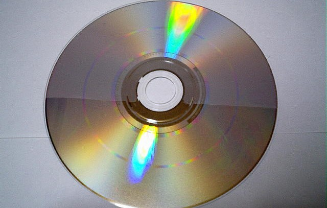

投稿日：2025年9月4日
2002年から2007年頃まで日本の音楽業界で採用されたコピーコントロールCD（CCCD）。 これはパソコンなどでの不正コピーを防ぐために、通常のCD規格を一部改変したディスクです。 しかしその導入は、音楽ファンやアーティストの間で大きな議論を呼び、最終的には市場から撤退しました。 本記事では、導入の経緯・採用例・問題点・アーティストの反発・撤退までを詳しく解説します。
CCCD（Copy Control CD）は、音楽CDがパソコンで簡単にコピーされるのを防ぐ目的で開発された規格外のCDです。 「リッピング」と呼ばれる音楽データの抽出を困難にするために、エラーを意図的に混入させる仕組みが採用されました。
日本で最初にCCCDが導入されたのは2002年。
CCCDでは複数の方式が使われました。
いずれも「パソコンでのコピー防止」を目的としましたが、その分再生互換性に問題を抱えていました。
多くのミュージシャンがCCCDに否定的な意見を表明しました。
一部のアーティストはレーベルに強く抗議し、結果的に採用が見送られるケースもありました。
2004年頃から主要レーベルで順次CCCDの導入が終了。2006年までにほぼ市場から姿を消しました。 ただし、avex系のレンタルCDでは2007年頃までCCCD仕様が見られたという事例も残っています。
現在ではCCCDは「失敗した規格」として語られることが多く、音楽業界における教訓の一つとなっています。
CCCDは「音楽のコピー防止」という目的を持ちながらも、ユーザーの利便性や音質を犠牲にしたため広く受け入れられませんでした。 その結果、音楽業界はCD販売の衰退と共に、ダウンロード販売やストリーミングへと舵を切るきっかけの一つとなったのです。